UGC can be classified into the following overall types.
This section uses examples from released applications to explain the overall types of UGC.
You can use these tables to figure out which type(s) apply to the UGC your application will handle.
Text-based names are text strings freely entered by the user. The difference between these and all other freely-entered text is that these are names for characters, items, or anything else that can be named by the user.
| Type | Example | Description of example |
|---|---|---|
|
Character names |
Animal Crossing: Happy Home Designer for Nintendo 3DS Player names 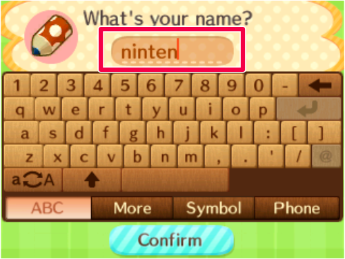 |
This is the name the user gives to their player character. In this example, the player name is "ninten". The number of letters the user can enter is limited. |
| Item names |
Animal Crossing: Happy Home Designer for Nintendo 3DS Names of user-created designs
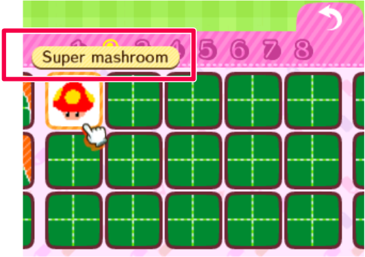 |
These are names the user can give to their creations or to other items they have customized. In this example, the name of the user-created design is "Super mashroom". The number of letters the user can enter is limited. |
|
Internet tournament names |
Mario Kart 8 for Wii U Tournament names
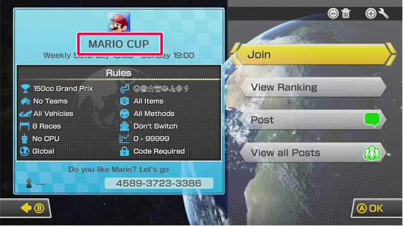 |
These are names of racing game tournaments that users can set up for themselves. In this example, the tournament name is "MARIO CUP". The number of letters the user can enter is limited. |
| Account IDs |
Donkey Kong Tropical Freeze for Wii U Rankings
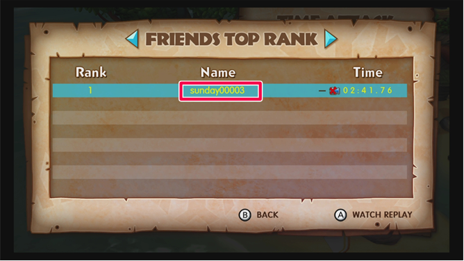 |
These are user-created IDs used to identify accounts. This category refers to the IDs for all kinds of accounts, including Nintendo Accounts and any accounts used on the publisher's independent services. |
Strings freely entered by the user are text.
| Type | Example | Description of example |
|---|---|---|
| Greeting text |
StreetPass Mii Plaza for Nintendo 3DS Greetings
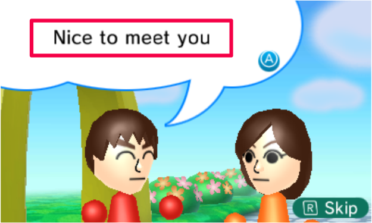 |
This is a message to peers that the user performs StreetPass with. In this example, the greeting is "Nice to meet you." The number of letters the user can enter is limited. |
| Comments on posts |
Miiverse for Wii U Comments on posts
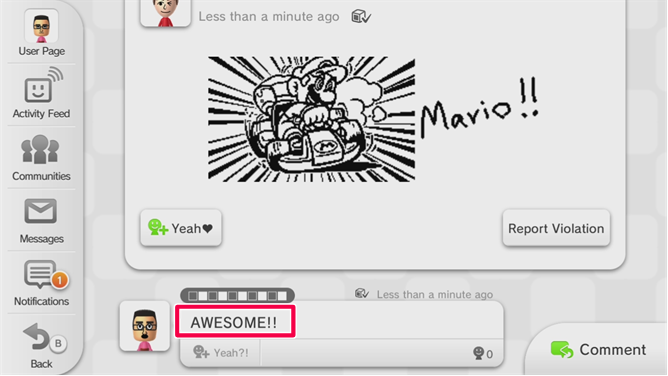 |
These are text-based comments. In this example, the posted text is "AWESOME!!" The number of letters the user can enter is limited, but they can post several comments one after the other to create a longer piece of writing. |
| Text chat |
Devil's Third for Wii U Drill Chat
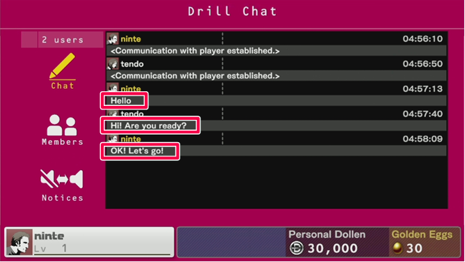 |
This is text-based chat where the user can talk in realtime with matchmaking peers and with other members of groups they have joined. In this example, the text-based chat messages are "Hello", "Hi! Are you ready?" and "OK! Let's go!" Users can freely input text strings and send them to peers. Users can post these one after another in quick succession. |
| Internet tournament descriptions |
Mario Kart 8 for Wii U Tournament descriptions
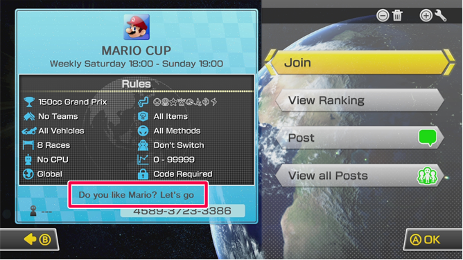 |
These are descriptions ("welcome messages") for racing game tournaments that users can set up for themselves. In this example, the tournament description is "Do you like Mario? Let's go". The number of letters the user can enter is limited. |
This refers to illustrations freely drawn by the user and animations using such images. If any portion of an image or animation uses a photo, that UGC is classified as "photos and video" instead.
| Type | Example | Description of example |
|---|---|---|
| Hand-drawn illustrations |
Animal Crossing: Happy Home Designer for Nintendo 3DS User-created designs
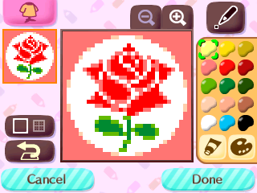 |
These are illustrations users can freely draw by hand. They are bitmap images with a large number of pixels and therefore a high degree of expression. |
| Handwritten chat |
Pictochat for Nintendo DS
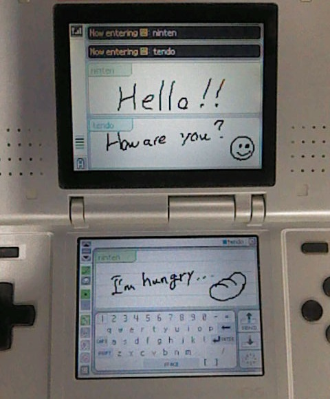 |
Users can share and exchange hand-drawn images with peers, similar to a chatroom. |
| Screenshots that contain UGC |
Animal Crossing: Happy Home Designer for Nintendo 3DS Screenshots taken within the application
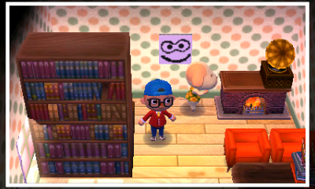 |
These are screenshots taken within your application. This example is a screenshot of a scene where users can freely place furniture and decorate a room with hand-drawn illustrations. In this application, the user is also able to take screenshots of scenes that do not contain UGC on-screen, but the application is unable to tell apart which screenshots contain UGC and which do not. Therefore all screenshots are treated as "screenshots that contain UGC." |
| Animation that contains UGC images |
Flipnote Studio 3D for Nintendo 3DS Flipnotes
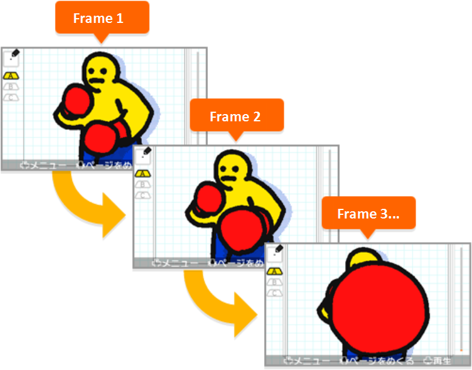 |
These are flipbook animations drawn by the user. |
This refers to photos taken by the IR sensor, as well as video that uses those photos. Note that you must handle all images as photos unless you can guarantee that no camera or similar device was used to create them. If even just a portion of an image or video uses a photo, it must be classified as a "photo" or "video" — indicating that it contains photos — as opposed to an "image" or "animation," which does not.
| Type | Example | Description of example |
|---|---|---|
| Photos |
Sparkle Snapshots 3D for Nintendo 3DS Decorated images
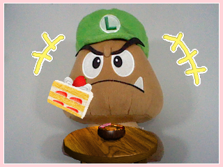 |
These are images made by using stamps, handwritten text, or hand-drawn line art to decorate a photo taken with the Nintendo 3DS cameras. |
| Images loaded from the SD card |
Swapnote (NOA) / Nintendo Letter Box (NOE) for Nintendo 3DS Handwritten swapnotes
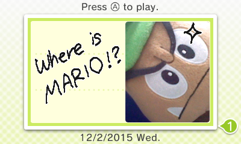 |
These are created using images loaded from the SD card. The right half of this example shows an image saved on the SD card, while the left half shows text handwritten inside the application. Also note that because images loaded from the SD card may be photos, these handwritten swapnotes are handled as photos. |
| Video |
Wii U Chat for Wii U Video chat 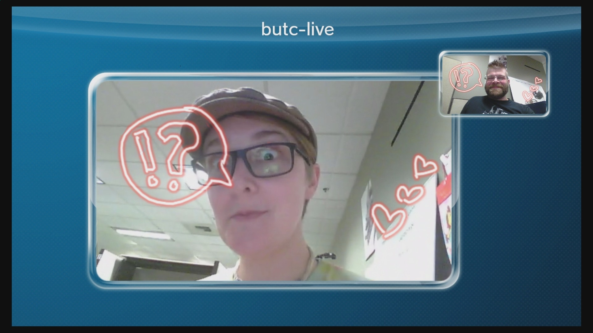 |
This is video chat using the camera on the Wii U GamePad. Users can chat by sending video and audio of themselves to a peer. |
| Video that contains photos |
Flipnote Studio 3D for Nintendo 3DS Flipnotes
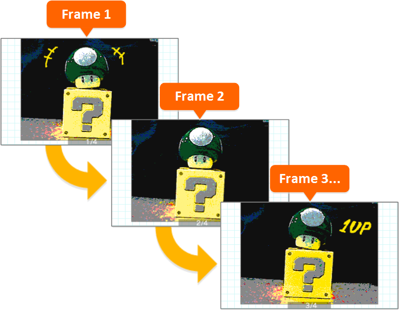 |
These are flipbook animations drawn by the user. This example uses photos taken by the Nintendo 3DS cameras. |
This refers to audio input via a microphone connected to the Nintendo Switch system.
| Type | Example | Description of example |
|---|---|---|
|
Recorded audio |
Flipnote Studio 3D for Nintendo 3DS Flipnotes
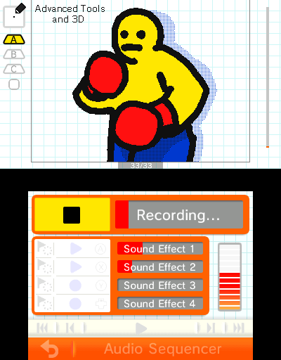 |
This is audio recorded with the Nintendo 3DS microphone, which the user then attaches to a flipnote as background music or sound effects. |
| Voice chat |
Super Smash Bros. for Wii U Voice chat 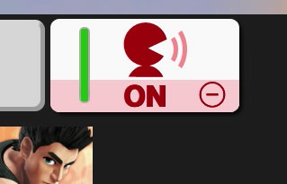 |
This is a feature that allows users to converse with peers using the microphone on the Wii U GamePad. |
| Video with audio |
Wii U Chat for Wii U Video chat |
This is video chat using the microphone on the Wii U GamePad. Users can chat by sending video and audio of themselves to a peer. |
This refers to UGC made by combining 2D or 3D preset parts.
| Type | Example | Description of example |
|---|---|---|
| Illustrations made by combining preset parts |
Devil's Third for Wii U Emblems
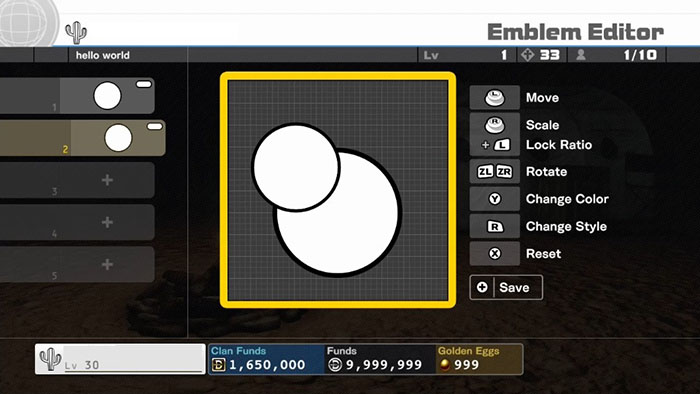 |
These are emblems that users can create by combining preset basic shapes. |
| Characters made by combining preset parts |
Freakyforms: Your Creations, Alive! for Nintendo 3DS Formees
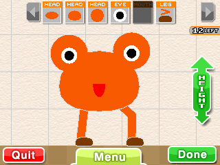 |
These are characters that users can create by combining preset parts. When creating these characters, users can freely choose the number of parts, their color, their placement, and so on. |
| Stages made by combining preset parts |
Super Mario Maker for Wii U Posted stages
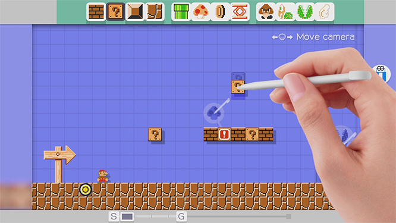 |
These are stages that users can create by combining preset parts. When creating this UGC, users can freely choose the number of parts, their placement, and so on. |
| Maps made by combining preset parts |
Animal Crossing: Happy Home Designer for Nintendo 3DS Houses and facilities
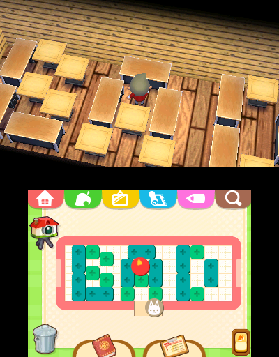 |
These are 2D or 3D maps that users can create by freely combining preset parts. In the example, we were able to write the word "BAD" by arranging parts next to one another. |
| Sandboxes | Applications where the user creates stages together with other players. | These are stages created together with other players. Users can arrange any number of objects in any placement, color, or shape they desire. |
| Mii characters |
Mii Maker for Nintendo 3DS Scene where users edit their Mii character's additional Information 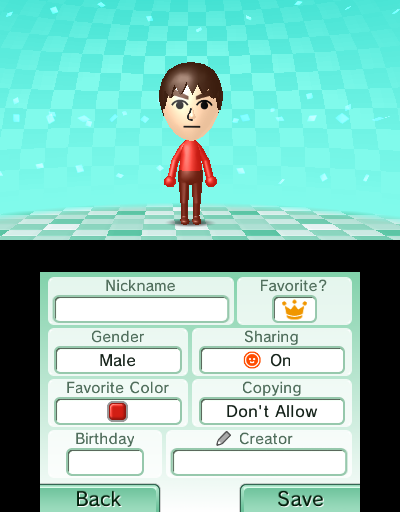 |
These are characters created in the Mii applet (which was called "Mii Maker" on Wii U and Nintendo 3DS). In addition to the character model itself, a Mii character also contains additional information including the Mii nickname and its favorite color. The term "Mii character" refers to all these components collectively. Info
Because users are able to choose from multiple facial elements with different colors and shapes and freely place them exactly where they want, Mii characters have a certain degree of freedom of expression. But because the system has features that take this into consideration when handling Mii characters (such as not allowing users to include profanity in Mii nicknames), the Guidelines categorize Mii characters as UGC that requires the same level of care as UGC with low freedom of expression. |
This refers to UGC with low freedom of expression. Even though this content is created by users, it would be difficult for users to completely freely express themselves through this content. Here are some examples.
| Type | Example | Description of example | When does this become UGC with higher freedom of expression? |
|---|---|---|---|
| Text entered using keywords |
Nintendo presents: New Style Boutique 2: Fashion Forward (NOE) for Nintendo 3DS Profile message
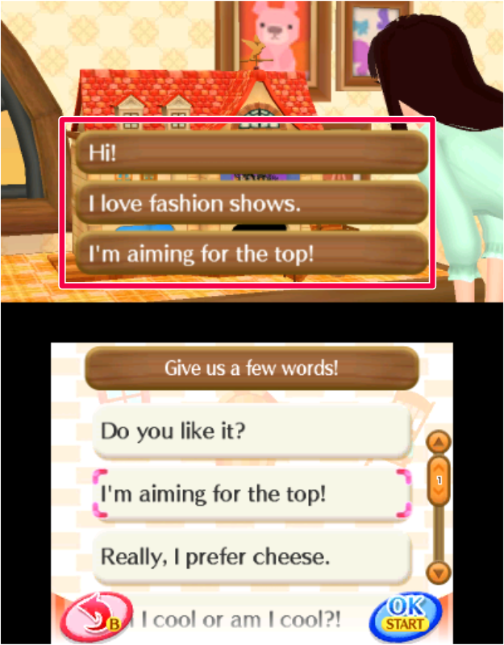 |
This is a message the user is able to put together from a list of preset keyphrases. In the example, the keyphrases are "Hi!", "I love fashion shows.", and "I'm aiming for the top!" This is text the user composes by choosing keyphrases preset by the application, such as "Do you like it?", "I'm aiming for the top!", "Really, I prefer cheese.", and "Am I cool or am I cool?!" listed on the bottom screen. |
If this is implemented in a way that could allow users to convey personal information or freely express any idea to other users by choosing different keyword/keyphrase combinations. In such cases, you must handle this UGC as "text." |
| Text entered using preset letters |
Applications which allow users to create words by combining letters in their hand with letters already placed on the game board, or allow similar user operations
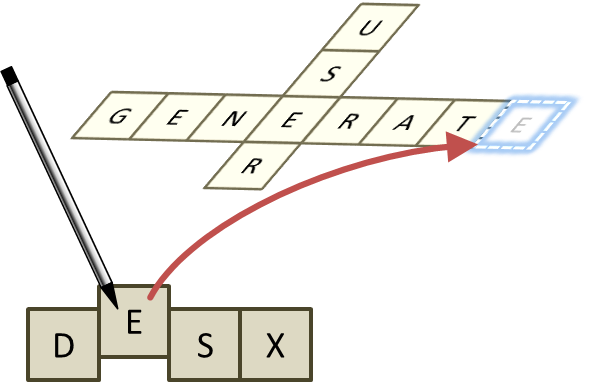 |
These are text strings the user creates by arranging specific preset letters. This is handled as UGC with low freedom of expression because users can only choose from a limited set of available letters, which makes it difficult to freely express themselves or have a conversation. |
If users have an unlimited number of letters in their hand. In such cases, users become able to freely express themselves, so you must handle this UGC as "text." |
| Ghost data or replay data |
Mario Kart 8 for Wii U Replay data
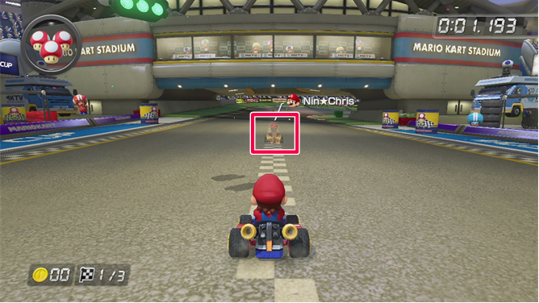 |
This is ghost data or replay data for a racing game, or similar kinds of ghost data/replay data created using only key input. Note that in the example, "Nin☆Chris" is the player name, and therefore counts as a text-based name. |
If ghost data or replay data contains UGC that requires special handling. In such cases, you must handle the whole thing as that type of UGC. |
| Characters used as avatars |
Animal Crossing: Happy Home Designer for Nintendo 3DS Player character creation screen
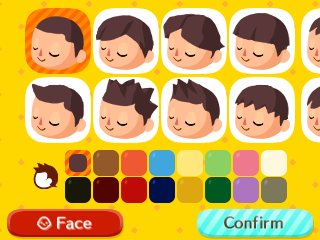 |
These are characters the user creates by selecting among preset colors, shapes, and options for facial features, clothing, and other parts. |
If users have high freedom of expression (for example, they can freely modify eye placement, hairstyle, and so on). In such cases, you must handle this as "characters made by combining preset parts." |
This refers to content that is created by users within your application, but which is not exchanged with other users.
If the user can create UGC but is not able to exchange it with other users, the content cannot cause unintended outcomes. This UGC requires no special handling.
CONFIDENTIAL